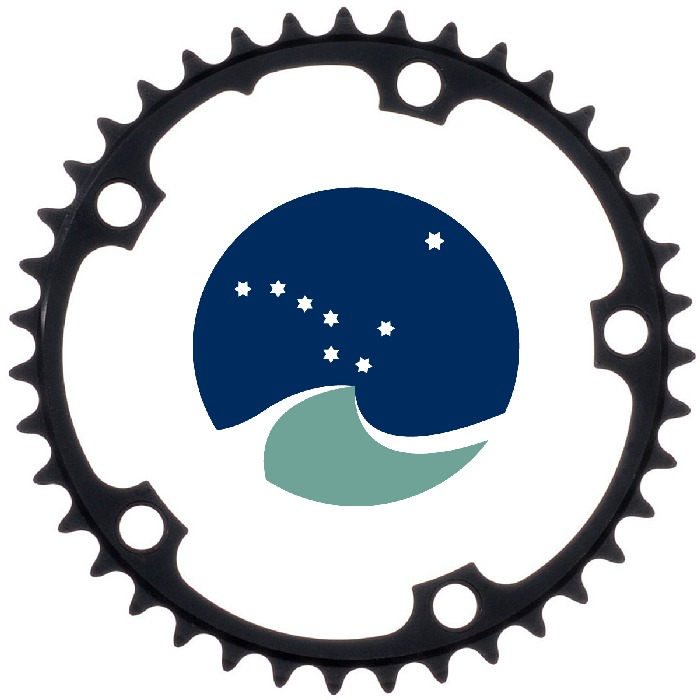

The TAF web interface will allow users (EG, ADG, ACOM, Secretariat, others) to browse, upload, modify and run stock assessments online.
The URL will probably be:
https://taf.ices.dk
Anyone can browse and download input/model/output files, but a username and password is required to upload, modify and run.
The web interface will not be the only TAF user interface. For example, without opening a web browser, users can download files directly into R, and perhaps upload files directly from R. The file types will include R scripts, model config files, and CSV tables.
The user interface could be implemented in four layers:
For some stocks, there will be more than one assessment. These can be diagnostic runs that are considered relevant for ADG/ACOM, update assessment later in the year, etc.
In the four-layer design outlined above, the "Stock mode" has links to assessments for that stock. A relatively quiet page between two busy pages, "Boss mode" and "Assessment mode".
Within TAF, a stock assessment can be:
When more than one assessment exists for a given stock, the TAF status of that stock is the same as the highest status of any assessment for that stock.
All CSV files (input and output tables) will be available to download directly into R.
To make it easy for users to specify the desired data, it might be beneficial to have a URL that is easy for humans to understand, memorize, and type. For example, a plain directory tree where year is a directory with stocks as subdirectories:
https://taf.ices.dk/csv/2017/cod-347d/catage.csv
In this way, CSV files could be downloaded into R using core R functionality, without the need of any packages:
read.csv("https://taf.ices.dk/csv/2017/cod-347d/catage.csv")
If the CSV file server is used widely, both in scripts and interactive sessions, a shorter URL might be desired. For example:
https://csv.ices.dk/2017/cod-347d/catage.csv
If a plain directory tree is not practical, a web service could be used:
https://taf.ices.dk/csv/getcatage?stock=cod-347d&year=2017
Depending on the web service implementation, this might introduce R package dependencies to download and parse the data.